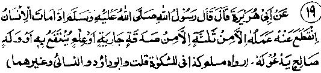
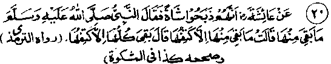
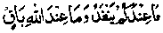
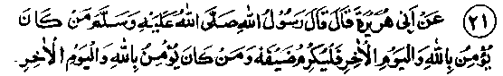

Chapter One · Section (b): Ahadith on the virtues of spending for the cause of Allah
12. Sadaqah with continuing reward after death

Hadith 19
Rasulullah Sallallaho alaihe wasallam has said that the returns for a person’s own. virtues come to an end when he dies; but there are three such things, the returns for which keep accruing even after death: a Sadaqah with recurring benefits, knowledge from which people continue to benefit, and virtuous children who offer Du‘aa for their deceased parents.
Note: How infinitely Kind, Liberal and Bountiful Allah Ta'ala is for man! Even after his death, when his own deeds come to an end and he is powerless to do any good act for himself and remains in a sound sleep in the grave, Allah Ta'ala has created means through which the deceased’s account of virtues keeps on increasing.
Rasulullah Sallallaho alaihe wasallam has mentioned three of these means in this Hadith. The first one is virtue with recurring benefits, that is to give as Sadaqah something, the benefit of which is lasting, such as building a Masjid where people offer Salaat. As long as it remains in use for that purpose, its returns will keep accruing. Some other similar cases are: to build a caravan-serai for free stay of travellers, to dedicate a building for the public good or for religious purposes, to benefit Muslims. The recurring returns for such dedications will benefit the deceased donor. Yet another example of this is to have a well dug for public use; the benefit of this will keep accruing as long as people keep drinking its water or use it for ablutions, etc., all for the gain of the person who paid for the well, whether he is alive or dead. Another Hadith says, "The things for which a Mo’min continues to receive reward after death are: knowledge that he taught and spread, the good children he left behind, or a copy of the Qur’an which he left as a legacy, or a Masjid which he built, or a caravan-serai that he made for the travellers, a canal that he dug, or a Sadaqah which he gave when he was alive and healthy" (Mishkaat). One can continue to receive benefits after death through creating, by way of Sadaqah, any thing of lasting value and meant for public good. Yet another thing which is of continuous benefit is the knowledge taught to others and also the diffusion of knowledge, which includes donating money to a Madrasah or compiling a religious book or distributing such a book among religious students. To donate volumes of Qur’an and religious books to Masjids and Madrasahs for public reading also come under diffusion of knowledge.
Another Hadith mentions seven things which .perpetuate their rewards even after death. These are teaching of knowledge, building of a canal, establishing a well, planting a tree, building a Masjid, leaving the Qur’an in heritage and leaving behind children who invoke upon the deceased parents forgiveness from Allah Ta'ala. It is not necessary that all the material things mentioned here are meant to be done by an individual, but any share in them would bring proportionate benefit for the deceased.
The other thing mentioned in the above Hadith is knowledge, which is meant for people’s benefit. For example, to leave a book in a Madrasah, from which people will benefit as long as it lasts and which will remain a source of blessing for the deceased. Similar is the case of paying for someone to become a ‘Hafiz’ or an Alim; as long as their knowledge or ‘Hifz’ keeps spreading, whether the ‘Hafiz’ or ‘Alim’ is living or dead, the contributor will keep receiving the blessings. For example, the Hafiz taught the Qur’an to ten or twenty boys and he died, after which his pupils kept teaching and reading the Qur’an; as long as this system continues, the teacher (Hafiz) will perpetually receive its blessings, and so will the person who made the ‘Hifz’ of the Hafiz possible. Still, in the larger sense, this grand system of teaching and learning will continue till Qiamah, and thus the original contributor will be the recipient of everlasting blessings, whether someone invokes them or not. The same applies to the making of an Alim, with its blessed results again. Here it is not necessary that the total expenses of making an Alim or Hafiz are to be borne for receiving benefits after death. Blessings till Qiamah shall accrue for any portion or share in it.
Fortunate are the people who endeavour physically or financially to spread the right knowledge for the security and continuity of ‘Deen’. As life here is no more than a dream, the termination of which can come about unexpectedly, whatever store of this sacred commodity one leaves behind will prove to be lastingly useful. The kith and kin, the relations and the friends will mourn him only for a few days and then become busy in their occupations, forgetting the deceased, whereas these contributions to ‘Deen’ are the things of lasting benefit which one must deposit during one’s lifetime in the perpetual treasury, assuring safety of the capital and accruing of profit till Qiamah. The third item mentioned in the above Hadith is virtuous children who will pray for the welfare, of their deceased parents. In the first instance, the effort to make children virtuous in itself is a deed of perpetual benefit and, as long as they do good deeds, the parents will keep receiving the blessings automatically. Their prayers for the benefit of the parents will be an additional permanent treasure for the latter.
In a book called ‘Raudh’ is a story of a pious lady known as Bahitah, who was too regular in her prayers. At the time of her death she raised her head towards heaven and exclaimed , "O, the One, who is my only Treasure and Provider for life and death; I pray, do not disgrace me at the moment of death and save me from the horrors of the grave"! After her death, her son made it a practice to visit her grave every Friday and read the Qur’an there, offering the blessings for his mother, as well as for all those buried in the graveyard. One day, he saw his mother in a dream and asked her, how she was.. The mother replied, "The severity of death is extremely harsh. By the grace of Allah Ta'ala, I am most comfortable in the grave with a bed of sweet basil and silken cushions. And the treatment given to me will last till Qiamah." The son asked her if he could be of any service to her. She said, "Do not give up coming to me on Fridays and reading the Qur’an. On your arrival all the dwellers of the graveyard come to me and tell me that you have arrived. Your visit to the graveyard is a source of great pleasure for me." The boy said that he visited the place regularly on Fridays. One day he saw in a dream that a very big gathering of men and women came to him and he asked them who they were? They said, they were the dwellers of such and such graveyard and they had come to thank him for his Friday visits to them and his prayers for their forgiveness by Allah Ta'ala that pleased them most. They requested him to keep up that practice, which he continued most carefully.
Another learned dignitary relates that a person saw in his dream that all the graves in a graveyard opened up suddenly and the dead came out of them and started picking up something from the ground, except one person who kept sitting and was quiet. The dreamer approached him and asked what the others were picking, to which he replied that they were picking up the blessings of Sadaqah, Du‘aa and Darood .which the living people had offered for the dwellers of this graveyard. The dreamer asked him why he was not picking up anything. The dead person replied that he was happy without picking up anything, as he had a young son who had the business of selling sweetmeats in such and such bazaar and who daily read the whole of the Qur’an and sent him its blessings. The man went to that bazaar in the morning and saw a young man selling sweets while his lips were moving. The man asked him what he was reading? The young man replied that he daily recited the whole of the Qur’an and offered its blessings as a present to his deceased father. The person who had the dream, again saw the same vision after sometime, and noticed that the person with whom he had talked was also picking up something along with others, whereupon the man woke up surprised! In the morning he went to the same bazaar and came to know that the young man was dead. (Raudh).
Saleh Murree Rahmatullah alaihe has related that once on a Friday night, well before dawn, he left his home to offer morning prayers at the Jamia Masjid, and came across a graveyard where he sat down beside a grave (as it was too early for-Salaat), and dozed off. He saw in his dream that all the graves had opened up and the dead came out. They were all happily and cheerfully talking to each other and among them was a young man with soiled clothes looking gloomy, who sat away from the others. After a short while, a large number of angels descended from the sky carrying trays covered with glittering napkins. They handed a tray to each person who returned to his grave with the tray. When all had gone, the lonely person also got up to enter his grave but without a tray. The dreaming gentleman approached him and asked him why he was so gloomy and what those trays were. He replied that the trays contained the presents which the living people had sent to their dead. As for him, he had no one living except his mother to send him anything, but she had remarried and was too busy with her husband and never thought of him. On enquiry, the dead son gave him the address of his mother. Next morning, Saleh went to the young man’s mother and told her about his dream. The woman said, indeed, the young man was her son and most dear to her, and she had carried him in her lap. The woman then gave Saleh one thousand Dirhams and requested him to give that money as Sadaqah for her son who indeed was the coolness of her eyes, and she promised never to forget to pray for him and give Sadaqah for his sake. Saleh Rahmatullah alaihe further said that he once again had the same dream with the same gathering of people in the graveyard. This time the young man was wearing very good clothes and looked very happy. He came running to him and said, "May Allah Ta'ala bless you immensely. Your present has reached the." (Raudh).
There are thousands of instances of the above type mentioned in various books. Some of these have also been mentioned under the preceding Ahadith. So, any one who wishes that his children be of use to him after his death, should endeavour to do whatever he can, to make them virtuous and righteous. It is the best one could wish for his children, as also for himself, as Allah Ta'ala has said in Surah Tahrim:
"O, the believers! save yourself and your families from the fire of , Jahannam." (at: Tahrim: 6)
Zaid Rahmatullah alaihe Ibne Aslam has said that when Rasul-ullah Sallallaho alaihe wasallam recited this Ayat, the Sahabah Radhiallaho anhum asked how they could save their children and families from the fire of Jahannam. Rasulullah Sallallaho alaihe wasallam said, "Keep on exhorting them to do the deeds which Allah Ta'ala likes and to keep away from those which Allah Ta'ala dislikes.” Ali Radhiallaho anho explained the Ayat by saying: to teach and exhort oneself and one’s own family about all things which are good. Rasulullah Sallallaho alaihe wasallam has further said, "May Allah Ta'ala have mercy on the father who helps his children to remain courteous and good towards their father (and not to treat him in the way amounting to disobedience)". (Ihya). This includes making them of good character and disposition; otherwise, their being discourteous will only be natural.
One Hadith says that the Aqeeqa ceremony of a baby be performed on the seventh day after birth and the baby be given a name; after six years of age the child must be taught good manners; after nine years of age the child must have a separate bed and should not share a bed with any other person; after thirteen years of age a child must perform Salaat regularly and may be punished if found neglecting Salaat, and when of sixteen years he or she should be married. After that, the father should get hold of his or her hand and say", I have taught you good manners and given you education and have got you married, I now seek Allah Ta'ala’s protection in this life from any mischief by you and any punishment in the Hereafter due to you." The meaning of ‘any punishment due to you’, as mentioned in a number of Ahadith under different versions is that, when a person acts in a wrong manner, that will count as a sin of his own doing and if the others copy him in that action, he will be accountable for their sins, too; not that there will be any reduction for the sins committed by them because of following another person; it will be a definite sin on their part, too, and the person whose example was followed will suffer additionally for their sins as well. Hence, when the children follow the bad examples set by their elders and act in a wrong manner, such sins will count against the elders, too. Therefore, the elders must particularly abstain from doing anything wrong in front of them (young persons).
In this particular Hadith it has been said that punishment for neglecting Salaat be given after thirteen years of age, whereas in a number of other Ahadith, the instructions for Salaat are to be given after seven years of age and beating for neglecting Salaat is to be done after ten years of age. This latter version is considered to supersede the previous one. Anyhow, a father is allowed to beat his child if he neglects to offer Salaat and if the former does not discharge this responsibility he will be guilty of committing a sin. Contrary to that, if the child is habitually regular in performance of Salaat, proper observance of fasting and other injunctions of Islam, the blessings of these virtues will accrue to the parents as well. Furthermore, when he grows up to be a pious person and makes Du‘aa for his parents, that will be an additional source of blessings for them. Ibne Maalik Rahmatullah alaihe has said that in the above-mentioned Hadith, the condition is of the children being virtuous, as the Du‘aa from the non-righteous children will not reach the parents. The mention of Du'aa in the Hadith is meant to encourage the children to pray for their parents. Moreover, it is generally maintained that the father of pious children automatically receives the blessings on account of all the virtuous deeds performed by them, whether they make a Du‘aa for him or not, It is like planting a fruit tree for common benefit; the planter will keep on receiving blessings as people eat fruit from the tree, whether they offer a prayer for him or not.
Allama Munavi Rahmatullah alaihe has said that offering Du‘aa by the children for their father has been specially emphasised to impress its urgency and importance for the children to keep up this virtue. Otherwise, Du'aa is fruitful in all cases, whether by one’s own children or by others. The main Hadith however mentions only three things for indicating their basic importance. There are several other actions in the same category, which are mentioned in different Ahadith about perpetual rewards and blessings. For example, in one Hadith, it is said that when a person is the first, to do something good, he will receive a reward for that action as well as for the actions of those who copy that good deed, without any reduction in the rewards of the individuals who followed the first person. Similarly, if someone starts an evil practice, he will suffer for the sin that he has committed and also for the sins of those who followed his bad example, without any reduction in the punishment of those who followed him. In another Hadith, it is said that the blessings for doing good deeds come to an end at one’s death but, in the case of a person who is assigned the duty of defending his country’s frontiers, the blessings for him keep accruing till Qiamah. Building of a canal and planting a tree for the common good of the-people come under the same category. Allama Suyooti Rahmatullah alaihe has counted those as eleven, while Ibne Emaad Rahmatullah alaihe has said those are thirteen in number. However, they are all related to the categories of the three principal actions mentioned in the main Hadith above. (Aun)

Hadith 20
Aishah Radhiallaho anha has said that once someone slaughtered a goat (and distributed some of it); when Rasulullah Sallallaho alaihe wasallam enquired, "What remains of the goat?" the reply was, "Only a shoulder." Rasulullah Sallallaho alaihe wasallam said, "All remains except the shoulder".
Note: The idea in this is that whatever is given away for Allah’s sake remains as an everlasting reward; the rest perishes unless it is spent for a worthwhile cause. Mazahir Rahmatullah alaihe has said that it points towards the Ayat of Holy Qur’an:

"Whatever you have in this world will perish one day (either by its own decay or your death). That which reaches Allah remains forever." (an-Nahl: 96)
In one of the Ahadith, Rasulullah Sallallaho alaihe wasallam has said that one says, "My property! My property"! whereas the fact is that his property is only that which he himself has used up by eating, wearing or giving it away in the path of Allah Ta'ala as a deposit for the Hereafter, the rest is all to be counted lost and left for other people, when he departs from here. Another Hadith says that once Rasulullah Sallallaho alaihe wasallam asked the Sahabah Radhiallaho anhum, "Is there any one among you who loves the property of his heirs more than his own property?" The reply was that there was no such person; every one loved his own property. Rasulullah Sallallaho alaihe wasallam then said that man’s own property is only that which he sends ahead of him as his treasure, and whatever is left behind is the property of the heirs. (Mishkaat)
A Sahabi Radhiallaho anho has said that he was once in the company of Rasulullah Sallallaho alaihe wasallam, who recited Surah Takaathur and said, "Man claims to have his property. O man! you own nothing except that which you use in eating, the clothes that you wear out and the Sadaqah that you send ahead to be preserved in Allah Ta'ala’s treasury." Several Sahabah Radhiallaho anhum have narrated to the same effect People deposit money in Banks most carefully, with no surety of its remaining with them. Even if a calamity does not fall on it in their lifetime, none of it will be any use to them after death; but the wealth deposited in the treasury of Allah Ta'ala will always be available for use without any fear of calamity, decay or decrease; in fact it will never finish.
Sahl Ibne Abdullah Tusturi Rahmatullah alaihe used to spend liberally in the path of Allah Ta'ala. His mother and brothers complained to Abdullah Ibne Mubarak Rahmatullah alaihe that Sahl wanted to spend everything and they feared he would become a pauper. Abdullah Ibne Mubarak Rahmatullah alaihe enquired from Sahl Rahmatullah alaihe about the matter. The latter asked Abdullah Ibne Mubarak, "If a person wanted to migrate from Madinah to the city of Rustaqq in Persia, where he had already purchased land, would he leave anything behind in Madinah?" The reply was that nothing would be left behind. Said Rahmatullah alaihe then said that was his real purpose. While the people thought he was going to migrate to another place, he had actually meant transfer to the next world. In these days, people have personal experience (of it) that when people who wish to move permanently from one country to another (e,g. India to Pakistan or vice versa) by their own choice, they try to transfer all their belongings and property, buildings, etc., by exchanging with those at the new locations, before actual migration. Until this arrangement is completed they do not move, despite all inconvenience at the old place. On the other hand, the people who are forced to move out of their homeland, leaving everything behind, undergo endless grief and sufferings. This is exactly the state of affairs of every single person leaving this world. As long as he is living, he has the power to transfer his property and belongings, etc., to the next world (Akhirah), -but when death causes a forced change of place, everything has to be left behind, as if it had been confiscated by the state. There is still time for those who understand the truth to transfer their property to the next world.
